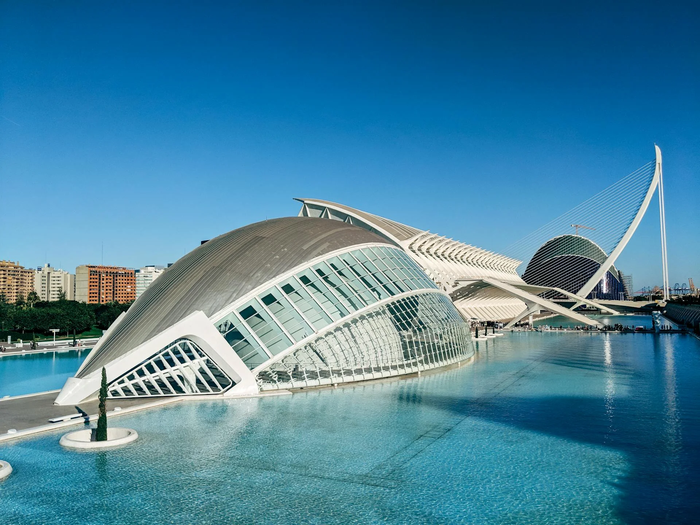

Ciudad de las Artes y las Ciencias
Hemisfèric · Museu · Oceanogràfic
Arquitectura icónica junto al Jardín del Turia (Hemisfèric, Museu de les Ciències y Oceanogràfic).
Déjate envolver por la magia de la ciudad y el mar
Valencia, tercera ciudad más grande de España, se abre al Mediterráneo entre huerta y mar. Atraviesa la ciudad el antiguo cauce del Turia —hoy un gran jardín— y conviven barrios históricos como el Carmen con hitos contemporáneos como la Ciudad de las Artes y las Ciencias. Su clima amable y su gastronomía hacen de Valencia un destino fácil de disfrutar todo el año.
Pero Valencia es, sobre todo, luz: fachadas doradas al atardecer, plazas vivas, el azul de la Malvarrosa y paseos tranquilos por el Jardín del Turia. Una ciudad luminosa, creativa y cercana que invita a caminarla, saborearla y guardarla en la memoria.
Tres imprescindibles en la ciudad
Hemisfèric · Museu · Oceanogràfic
Arquitectura icónica junto al Jardín del Turia (Hemisfèric, Museu de les Ciències y Oceanogràfic).
Patrimonio de la Humanidad
Joya gótica civil Patrimonio de la Humanidad, frente al Mercado Central.
Modernismo y vida local
Templo modernista de producto fresco y vida local.
Sabores típicos y dónde probarlos
Pollo, conejo, garrofó…
La receta clásica de la huerta.
Otro delicioso platillo
Muy conocido dentro de la gastronomía mediterránea.
Merienda típica
Refrescante y dulce, perfecta para cualquier tarde.